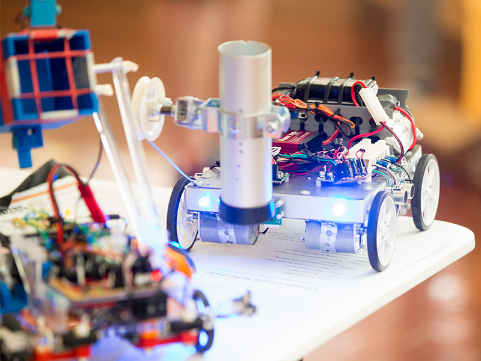

Descobre a mostra
A Mostra de Robótica do Clube TechLab reúne projetos criados pelos alunos para explorar como a tecnologia pode responder a desafios do dia a dia. Cada participante partilha a sua ideia, o processo de construção e aquilo que aprendeu.
Mesmo que ainda não tenhas construído um robô, podes participar com uma ideia, um protótipo ou uma demonstração. O objetivo é aprender em conjunto, experimentar soluções e inspirar novos projetos.

Materiais úteis
- Um computador ou tablet para programar e apresentar o projeto;
- Um kit de robótica ou materiais recicláveis para o protótipo;
- Cabos, pilhas ou bateria adequados ao projeto;
- Um cartaz ou apresentação com a ideia e os passos de construção.
Como participar
- Escolhe uma ideia ou um projeto de robótica para apresentar;
- Prepara o protótipo e testa-o antes da mostra;
- Escolhe uma sessão disponível na tabela;
- Preenche o formulário de inscrição;
- Apresenta o projeto na sessão escolhida.
Sessões da mostra
| Sessão | Horário | Local |
|---|---|---|
| Robótica e programação | 15h00–16h00 | Sala TechLab |
| Projetos e protótipos | 16h15–17h15 | Auditório da escola |